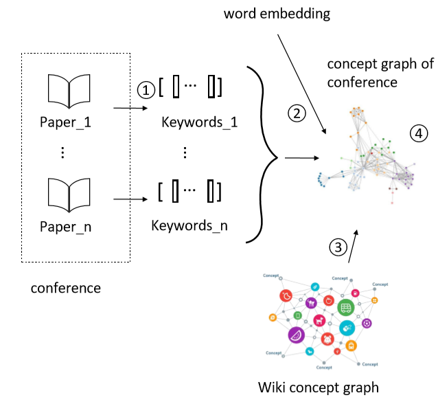
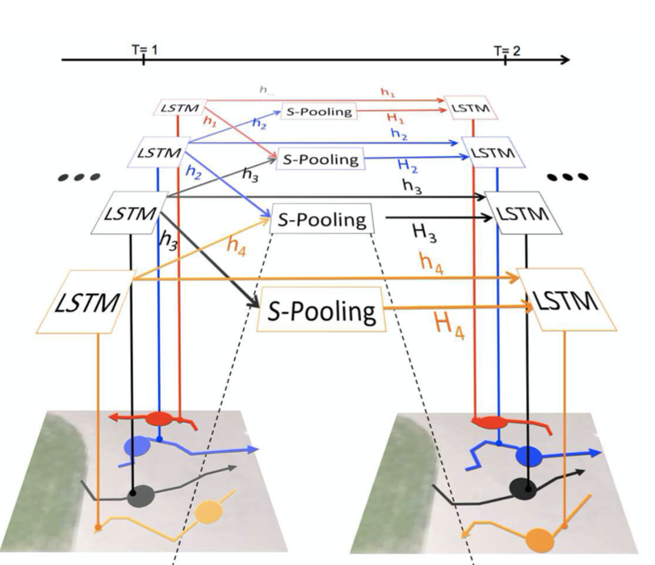

Jiaxing Xu （徐家兴）
PhD Student
Nanyang Technological University
Email:
jiaxing003@e.ntu.edu.sg
Hi! I am a PhD student at
School of Computer Science and Engineering,
Nanyang Technological University, supervised by Prof.
Yiping Ke.
Prior to NTU, I received a B.S. in Software Engineering from
Beihang University in 2020. I worked with Prof.
Jie Tang at
Tsinghua University on Natural Language Processing. Moreover, I worked as a research intern in Automatic Drive Group,
SenseTime Group Limited. In 2019 and 2020, I was a research intern in
Knowledge Computing Group,
Microsoft Research Asia.
My research interests lie in representation learning and data mining, especially on graph neural networks. I do believe these fields make invaluable contributions to the real world.
Curriculum Vitae
Education
Nanyang Technological University
School of Computer Science and Engineering
PhD Student, Sep. 2021 - Present
Beihang University
School of Software
Bachelor of Engineering, Aug. 2016 - Jul. 2020
Nanyang Technological University
School of Computer Science and Engineering
Visiting Student, Jul. 2019 - Sep. 2019
Publications
Jiaxing Xu, Aihu Zhang, Qingtian Bian, Yiping Ke. Union Subgraph Neural Network. In Proceedings of the 11th International Conference on Learning Representations (ICLR'23) (submitted).
Jiaxing Xu, Jinjie Ni, Sophi Shilpa Gururajapathy, Yiping Ke. "A Class-Aware Representation Refinement Framework for Graph Classification." arXiv preprint arXiv:2209.00936 (2022).
Jiaxing Xu, Jianbin Cui, Jiangneng Li, Wenge Rong, Noboru Matsuda. "Entity Aware Syntax Tree Based Data Augmentation for Natural Language Understanding." arXiv preprint arXiv:2209.02267 (2022).
Yanqiu Song, Hang Su, Defang Yuan, Jiaxing Xu, Ting Gao. Venture Capital and Acquisition Performance in the Newly Public Chinese Firms. In Proceedings of the 20th European Academy of Management conference (EURAM’20).
Research

Conference Concept Graph Automatic Generation by Text Mining
Researchers always have the demand to know what areas a conference focus on and how this conference developed. Thus, we purpose a method to automatically extract keywords from every paper of a conference, construct it to a concept graph, and combine those small graphs to a concept graph of a particular conference. This framework could not only help researchers quickly understand a conference, but also help us discover new concepts.

Enhanced Meta-Learning and Active Learning for Cross-lingual Named Entity Recognition with Minimal Resources
For languages with no annotated resources, transferring knowledge from rich-resource languages is an effective solution for named entity recognition (NER). While all existing methods directly transfer from source-learned model to a target language, in this paper, we propose to fine-tune the learned model with a few similar examples given a test case, which could benefit the prediction by leveraging the structural and semantic information conveyed in such similar examples. We also present an active learning algorithm to quickly find informative samples from unlabeled data that could fast improve the performance of our model.

Combine GNN with traditional Seq2seq model to improve the performance of dialog system
The baseline method of non-task-oriented dialog system is directly imputing the goal, knowledge and conversation into the encoder without using the structure features. To enhance the performance, we consider constructing a graph based on the required knowledge and using GNN to learn the structure features of the graph. Then the GNN output is combined with the origin encoder to improve the dialog agent.

TAS-LSTM: Predicting Sports Trajectory under Team Aware Situations
In order to handle unique properties of player trajectory prediction, we deliver a two-folded research procedure in which we firstly proposed a novel LSTM model called TAS-LSTM to appropriately modeling the group feature under team aware situations. We further consider the influence of the ball’s movement and proposed a new approach.
CHITCHAT: CHat with Interactively Trained Chatbots [POSTER]
• Teaching machines to converse naturally with humans is challenging and really interesting.
• We propose a fantastic system to help people construct their own chatbots:
• An interactive syntax tree help people to define question rules.
• Use visualization methods to understand how to make mock sentences.
• Use BLSTM-CRF-NER model and LSTM classifier to construct chatbot.
Professional Experience
- SenseTime Group Limited
Research Intern, advised by Haifang Qin
Aug 2020 - Jan 2021
- Knowledge Computing Group, Microsoft Research Asia
Research Intern, advised by Börje Karlsson
Dec 2019 - Jun 2020
- Knowledge Engineering Group, Tsinghua University
Research Intern, advised by Jie Tang
Jun 2018 - Jun 2020
- Computational Intelligence Lab, Nanyang Technological University
Research Intern, advised by Yiping Ke
Jul 2019 - Sep 2019
- Big Data Mining Team, Microsoft Research Asia
Research Intern, advised by Börje Karlsson
Mar 2019 - Jun 2019
- School of Software, Beihang University
Teaching Assistant of The Practice of Programming
Aug 2018 - Sep 2018
- Jiuyi (Beijing) Information Technology Co., Ltd.
R&D Engineer, Research and Development Department
Jun 2017 - Sep 2017
Conference/Journal Referee
- Engineering Applications of Artificial Intelligence (EAAI), 2022
- Memetic Computing (MEME), 2021
Honors
- 2019 Software College Innovation and Entrepreneurship Scholarship
- 2019 Software College Excellent Student Leader Award
- 2019 Yuanhang Undergraduate Summer Overseas Research Scholarship
- 2019 3rd Prize of the 29th Feng Ru Cup Science and Technology Competition
- 2018 Software College Innovation and Entrepreneurship Scholarship
- 2018 3rd Prize of the 28th Feng Ru Cup Science and Technology Competition
- 2017 Software College Excellent Student Leader Award
Community & Organization Experience
- Student Union of Software School, Beihang University
Minister of Public Relations Department
Jul 2017 - Jul 2019
- HP DreamWorks, Beihang University
Campus Captain
Jun 2017 - Jun 2019
Miscellaneous
Aside from my curiosity about computer science and my study preoccupation, I am also a big fan of music and go game. I would like to listen to the concert, play guitar or watch go game competition in my free time. If this involves sports, I favor swimming since it enhances my self-control and it is a benefit in my health insurance and spirit.